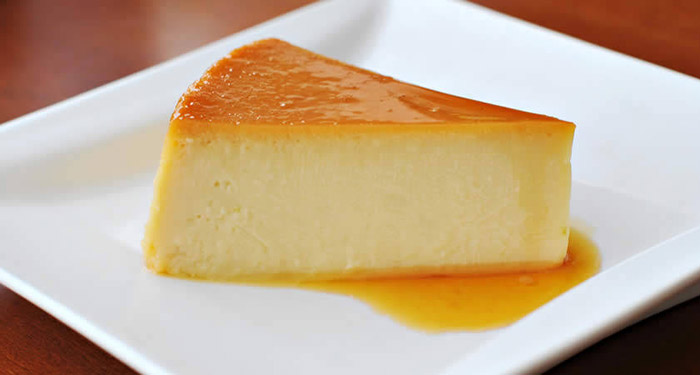

En esta parte puedes ver recetas de distintos flanes.
Flan de vainilla

Un flan de vainilla es un postre típico de la cocina española y latinoamericana. Tiene una consistencia suave y cremosa, similar a un pudín. Está hecho con una mezcla de leche, huevos, azúcar y extracto de vainilla, que se cuece en un molde a baño maría hasta que se solidifica y adquiere una textura firme pero delicada.
Por lo general, se sirve frío, desmoldado y decorado con caramelo líquido o frutas frescas. El flan de vainilla es un postre delicioso y muy popular, que se disfruta en todo el mundo.
Ingredientes:
1 litro de leche
6 huevos
1 taza de azúcar
1 cucharadita de esencia de vainilla
Pasos:
Precalentar el horno a 180°C.
Colocar el azúcar en una olla y calentar a fuego medio hasta que se derrita y tome un color dorado. Mover constantemente para evitar que se queme.
Verter el caramelo en un molde para flan y cubrir bien la base y los lados. Dejar enfriar.
En una batidora, mezclar los huevos con la leche y la esencia de vainilla. Batir hasta que quede homogéneo.
Verter la mezcla en el molde con caramelo.
Colocar el molde en una fuente para horno y llenar la fuente con agua caliente hasta la mitad del molde.
Hornear durante 1 hora, o hasta que al insertar un cuchillo en el centro del flan, este salga limpio.
Sacar del horno y dejar enfriar a temperatura ambiente. Luego, refrigerar durante al menos 2 horas antes de servir.
Para servir, pasar un cuchillo por el borde del molde para despegar el flan. Colocar un plato encima del molde y darle la vuelta para que el flan caiga sobre el plato.
Flan de chocolate
El flan de chocolate es un postre delicioso y popular en muchas partes del mundo. La combinación de la cremosidad del flan con el sabor intenso del chocolate lo convierte en una delicia irresistible para los amantes de los postres. Si sigues la receta con cuidado, estoy segura de que obtendrás un resultado delicioso y satisfactorio. ¡Que lo disfrutes!
Ingredientes:
200g de chocolate negro
400ml de leche
200ml de nata para montar
4 huevos
100g de azúcar
1 cucharadita de extracto de vainilla
caramelo líquido
Pasos:
Precalentar el horno a 180°C.
Derrite el chocolate negro al baño maría o en el microondas, revolviendo de vez en cuando para evitar que se queme.
En una cacerola, calienta la leche y la nata a fuego medio hasta que hierva. Retira del fuego y agrega el chocolate derretido, revolviendo hasta que esté bien mezclado.
En otro bol, bate los huevos con el azúcar y la vainilla hasta que estén bien combinados.
Agrega lentamente la mezcla de chocolate a los huevos, revolviendo constantemente para evitar que los huevos se cocinen.
Vierte un poco de caramelo líquido en el fondo de un molde para flan y agrega la mezcla de chocolate encima.
Coloca el molde para flan dentro de una fuente para horno más grande y agrega agua caliente hasta que la fuente esté llena a la mitad.
Hornea durante unos 40 minutos o hasta que el flan esté firme pero todavía tierno en el centro.
Retira del horno y deja enfriar antes de servir.
¡Listo! Ahora puedes disfrutar de un delicioso flan de chocolate. ¡Que aproveche!
Flan de dulce de leche
El flan de dulce de leche es un postre cremoso hecho con leche, huevos, azúcar y dulce de leche, que se cocina al baño maría en el horno. Es un postre popular y fácil de hacer que se sirve frío después de enfriar en el refrigerador. Su sabor dulce y suave lo hacen ideal para ocasiones especiales o para cualquier momento en que se quiera disfrutar de un postre delicioso.
Ingredientes:
1 lata de leche condensada (395g)
1 lata de leche evaporada (375ml)
4 huevos
1 taza de dulce de leche
1 cucharadita de extracto de vainilla
Caramelo líquido
Pasos:
Precalienta el horno a 180 grados Celsius.
En una licuadora, mezcla la leche condensada, la leche evaporada, los huevos, el dulce de leche y la vainilla hasta que estén bien combinados.
Vierte un poco de caramelo líquido en el fondo de un molde para flan y agrega la mezcla de la licuadora encima.
Coloca el molde para flan dentro de una fuente para horno más grande y agrega agua caliente hasta que la fuente esté llena a la mitad.
Hornea durante unos 45-50 minutos o hasta que el flan esté firme pero todavía tierno en el centro.
Retira del horno y deja enfriar antes de servir.
¡Y ya está! Ahora puedes disfrutar de un delicioso flan de dulce de leche. Si lo deseas, puedes decorarlo con un poco más de dulce de leche antes de servir.
Hornea durante unos 40 minutos o hasta que el flan esté firme pero todavía tierno en el centro.
¡Listo! Ahora puedes disfrutar de un delicioso flan de dulce de leche. ¡Que aproveche!